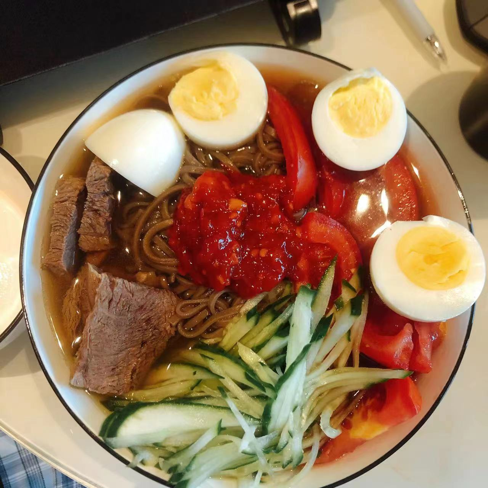

2019年11月10日 - 表白, 恋爱伊始
栖霞山, 南京
梦开始的地方。那时的记忆仿佛好遥远，但一些画面又历历在目，好像发生在昨天，你给我买的可乐、你天真的笑容...
栖霞山, 南京
梦开始的地方。那时的记忆仿佛好遥远，但一些画面又历历在目，好像发生在昨天，你给我买的可乐、你天真的笑容...
先锋书店, 南京
第一次去书店约会, 文艺, 和谐, 美好. 后面还去了南京的晓书馆, 还记得吗?
四川 && 南京
这是异地时宝宝发的美照, 本来2月就能再见面, 结果疫情开始了, 暂停了全国, 只能睹照思人😭
下马坊，南京
相隔三个月, 疫情好转, 终于能来南京与所爱之人相见, 此后五个月, 我们都在南京!
森林摩尔, 南京
这是在森林摩尔的奶茶店, 还记得我们傍晚一起在紫金山下漫步吗?
紫金山, 南京
我们好多美好的回忆都与紫金山相关, 当然我们也爬了好多次紫金山, 第一次是天文台, 第二次是主锋. 还记得登高望远, 目力所及的风景吗?
金马路, 南京
还记得这条路吗? 从七月到九月我们住在金马路, 你公司旁, 这是下午我去接你下班的照片.
南京 -> 西安
我去西安读研究生, 暂时的分别只为更美好的相见. 但异地真的好难熬...
玄武湖, 南京
第一次从西安来南京看宝宝, 住在玄武湖边的民宿, 一起看湖景、夜色！
朝天门, 重庆
宝宝第一次出远门，一起逛重庆。
南京
此处应该有照片，平时拍太少了，桌几。
南京 && 北京
这一年我们聚少离多，差点就分开了，但好在坚持了下来，经过这一年的至暗时刻，后面我们更加了解对方了，感情也进一步加深了。初识泡芙，感谢小女明星出镜~
马群, 南京
经过别离，疫情封控，大半年不见，我终于有机会从北京来西安看宝宝了！
南京 && 西安

我太幸福了，别人都羡慕不来，嘻嘻嘻！
南京 && 西安
半年来都在找工作，谢谢宝宝的理解和支持！
南京 && 西安
最后一年异地了，三年来我们从最开始的极不适应到相互理解，因为我们的信任和理解，我们才走到今天，愿以后没有异地，愿我们永远在一起。
南京 && 四川
春节终于见父母了，虽然忙乱、紧张，但父母也都放心了，咱们的关系更稳固了！
南京
花美，人更美！
西安
毕业前宝宝最后一次来西安玩，看了心心念念的灌篮高手，帅炸了！还有，啵啵鱼太美味了，宝宝吃了好多次...
南京
千里之外来南京，这次不走了！祝宝宝生日快乐！来日方长，一起续写我们两人的时间线吧。我把本站的代码保存在Github，它的备份在北极，即便前边年后，这份记忆依然存在！